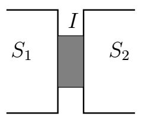
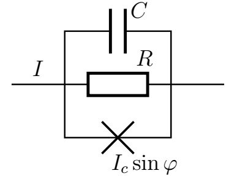
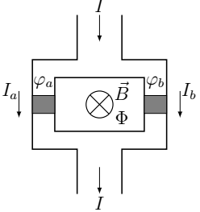

X25 (2025) — English translation
A superconductor is a substance through which current can flow at zero voltage without loss of energy. It turns out that if two superconductors are separated by a thin layer of non-superconducting material (for example, a normal metal with finite resistance or an insulator), then current can still flow through such a layer without resistance, provided that it does not exceed some critical value. Such a system, consisting of two superconductors separated by a non-superconducting layer, is called a Josephson junction, and the effect of current flowing through such a contact without loss of energy is called the Josephson effect. This effect was theoretically predicted by Josephson in 1962 and was soon discovered experimentally. The Josephson effect has several important practical applications, notably a magnetic field sensor and a voltage standard. The state of the superconductor is given by the complex number $\Delta = |\Delta|e^{i \theta}$, the square of the modulus of this number specifies the concentration of electrons in the superconducting state. The magnitude of the superconducting current through the contact is determined by the phase difference $\varphi = \theta_2 - \theta_1$ for these two superconductors. In the simplest case, which will be studied in this problem, the dependence has the form: \theta_1$ для этих двух сверхпроводников. В простейшем случае, который и будет исследоваться в этой задаче, зависимость имеет вид $$ I_s = I_c \sin \varphi. $$Здесь постоянная $I_с$ – critical current, depending on the material and dimensions of the contact.

If a current greater than $I_c$ is passed through the contact, a voltage $V$ will appear across it, and the total current will be equal to the sum of the normal current $I_n = V/R$ and the superconducting current. In this case, the phase difference will change over time, its change is described by the equation $$ 2 e V = \hbar \dot{\varphi}. $$ Здесь $e$ – заряд электрона, $\hbar$ – постоянная Планка. Далее для записи уравнений удобно использовать комбинацию $\Phi_0 = \pi \hbar /e$ с размерностью магнитного потока, $$ V = \frac{\Phi_0}{2 \pi} \dot{\varphi}. $$Кроме того, на краях контакта могут накапливаться заряды, которые можно учесть с помощью параллельно присоединенного к контакту конденсатора. Таким образом, в нашей модели эквивалентная схема контакта имеет вид параллельно соединенных идеального контакта (через который течет ток без сопротивления), резистора $R$ и конденсатора $C$, напряжения на которых задаются формулой выше.
Если пропустить через контакт ток больше $I_c$, на нем возникнет напряжение $V$, а полный ток будет равен сумме нормального тока $I_n = V/R$ и сверхпроводящего тока. При этом разность фаз будет меняться с течением времени, ее изменение описывается уравнением $$ 2 e V = \hbar \dot{\varphi}. $$ Здесь $e$ – заряд электрона, $\hbar$ – постоянная Планка. Далее для записи уравнений удобно использовать комбинацию $\Phi_0 = \pi \hbar /e$ с размерностью магнитного потока, $$ V = \frac{\Phi_0}{2 \pi} \dot{\varphi}. $$Кроме того, на краях контакта могут накапливаться заряды, которые можно учесть с помощью параллельно присоединенного к контакту конденсатора. Таким образом, в нашей модели эквивалентная схема контакта имеет вид параллельно соединенных идеального контакта (через который течет ток без сопротивления), резистора $R$ и конденсатора $C$, the voltages at which are given by the formula above.

In this part we will consider the behavior of a Josephson contact without taking into account capacitance, then the capacitor in the equivalent circuit can be replaced by an open circuit.
Let no current initially flow through the contact. Let's connect a source to it and slowly increase the value of the current flowing through the contact from zero to a certain value $I< I_c$. The phase change during such a process will also be slow, so the normal component of the current through the contact can be neglected. This means there will be no energy losses either, and all the work of the source will go to increase the energy of the Josephson junction.
In this part we will consider the behavior of the contact taking into account its capacitance.
Consider a pair of Josephson contacts arranged as in the circuit in the figure. These contacts are formed by two superconductors separated by two layers of insulators so that a ring is formed. In the center of the ring there is a coil that creates a magnetic flux $\Phi$. Due to the magnetic field, the phase inside the conductor begins to depend on the coordinates, so the phase differences at the two contacts $a$ and $b$ are different from each other. If $\varphi_a$ and $\varphi_b$ are the phase differences at these contacts, they are related to the magnetic field flux $\Phi$ by the relation $$ \varphi_a - \varphi_b = 2\pi \frac{\Phi}{\Phi_0}. $$Такое устройство называется сверхпроводящим квантовым интерферометром (SQUID, superconducting quantum interference device).
Рассмотрим пару Джозефсоновских контактов, расположенных как в схеме на рисунке. Эти контакты образованы двумя сверхпроводниками, разделенными двумя слоями изоляторов так что образуется кольцо. В центре кольца расположена катушка, создающая магнитный поток $\Phi$. Из-за магнитного поля фаза внутри проводника начинает зависеть от координат, поэтому разности фаз на двух контактах $a$ и $b$ отличаются друг от друга. Если $\varphi_a$ и $\varphi_b$ – разности фаз на этих контактах, они связаны с потоком магнитного поля $\Phi$ соотношением $$ \varphi_a - \varphi_b = 2\pi \frac{\Phi}{\Phi_0}. $$Such a device is called a superconducting quantum interferometer (SQUID, superconducting quantum interference device).

If the current through the interferometer exceeds the maximum value found in the previous paragraph, a voltage will arise across the interferometer, similar to the case of a single contact. By studying the behavior of this voltage, it is possible to measure magnetic fields with extremely high accuracy.
Source: https://pho.rs/p/3448